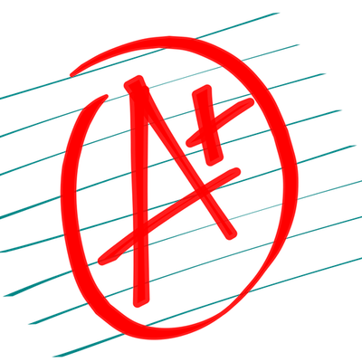

Alien Sudoku
El juego clásico de sudoku que aparace en muchos periódicos con niveles de dificultad adicionales.
A classical sudoku game with new levels.
The Sacred Bible
Este aplicativo es el clásico juego del ahorcado con un enfoque diferente. Tienes diferente categorías para probar tus conocimientos.
Rescue the accused of his unfortunate fate with your knowledge. Do not let the ninja be near the gallows and perform the execution. You can choose different topics: Geography, Painters, Writers, Animals, Sports, Flowers, Trees, Minerals, Chemistry, Actors. Three levels of difficulty. You can play with 20, 30 or 40 words. At the moment only in spanish.
The Sacred Bible
Esta aplicacion lleva a todos el contenido de la Biblia católica en inglés.
Discover the Catholic Bible in English and share its content.
La Biblia
Una aplicación para explorar la Biblia católica y compartir su contenido con tus aplicaciones favoritas.
Discover the Catholic Bible in Spanish and share its content.
QuoteThem!
Comparte frases y citas en tus redes sociales en inglés.
Share your quotes on your preferred social network like Twitter or Facebook.
Citémosles!
Comparte frases y citas en tus redes sociales.
Share your quotes on your preferred social network like Twitter or Facebook in Spanish.
Andes Xchange
Tipos de cambio para divisas y criptomonedas.
Find dayly quotes for popular currencies and cryptocurrencies.

Apruébame 2.0
Este aplicativo es una calculadora de notas y promedios que puedes utilizarla en tus estudios.
This app is a calculator to get scores and grades. It can be used to forecast your final score and estimate the grade you will need to pass a course. This version is in Spanish.
Fibromorse
Provides common prosigns used in telegraphy. Provide an alphabet with morse code and respective sounds. Customize you app theme colour. Learn about the pioneers and inventors of the telegraph. A simple AR activity to show an old classic telegraph.
Está aplicación es útil si necesitas saber el alfabeto Morse y las señale más comunes usando este alfabeto. También hay una curiosa actividad usando realidad aumentada.
ArxivLens
ArXivLens has multiple features to look for preprints in ArXiv. The app includes all the subjects and categories you find in ArXiv. You have a search history to reuse your old searches and find new results. The app opens preprints in pdf format from your results with an external application. The app lets you mail to your colleagues or friend with a link to your search.
ArXivLens es un buscador de artículos y publicaciones científicas que usa el banco de datos ArXiv. La aplicación incluye la casificación usada por ArXiv para cada tópico. Tambien es posible reconocer los códigos de identificación de cada documento usando la cámara y buscarlos en la base de datos.